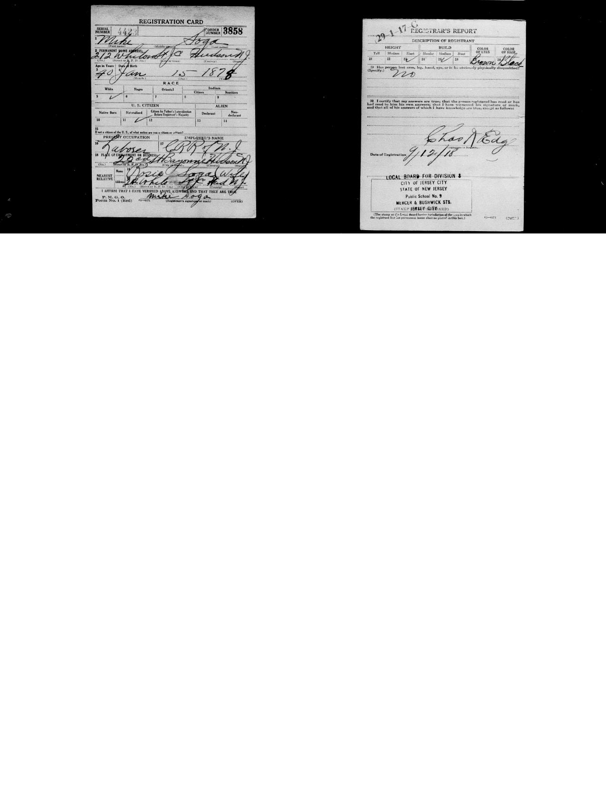
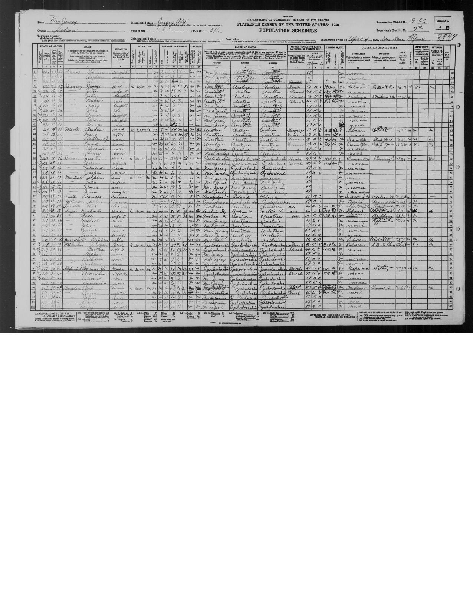
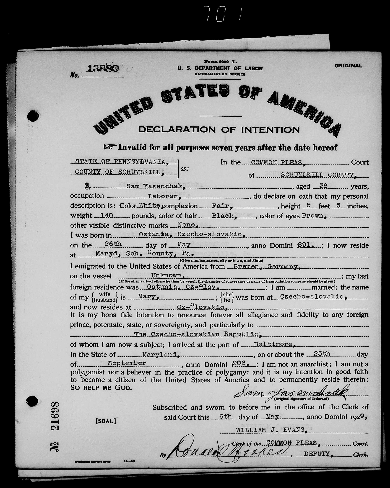
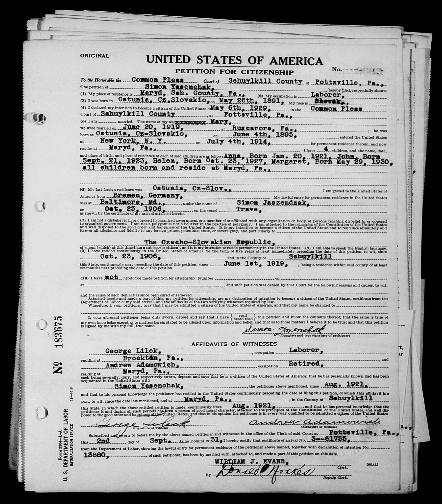
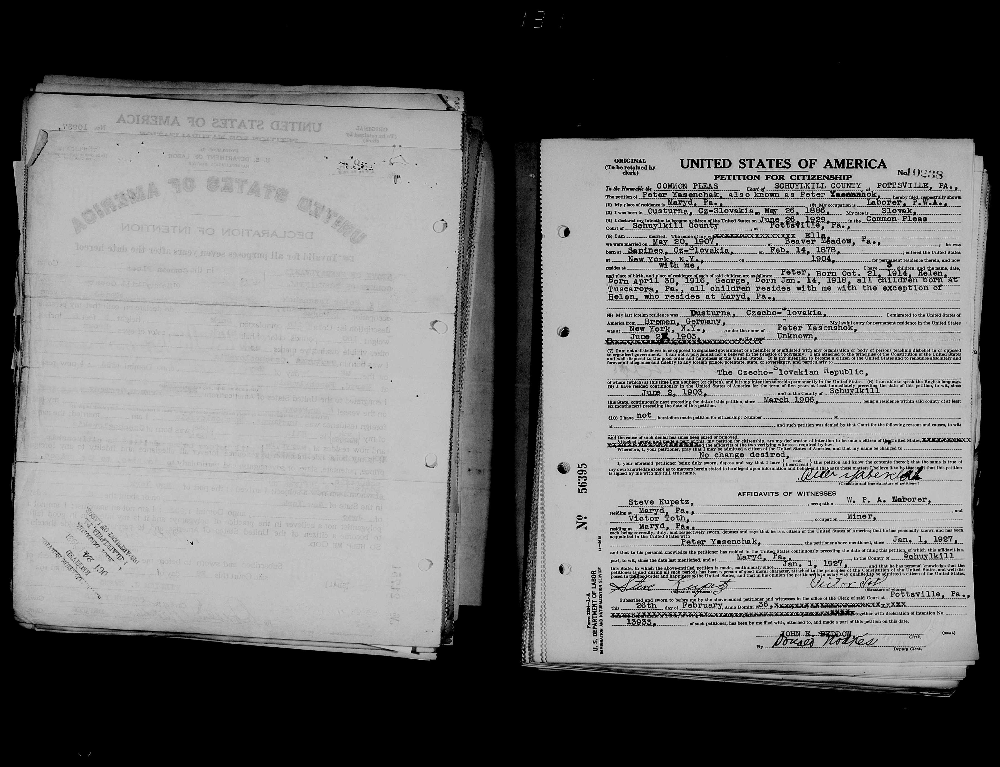
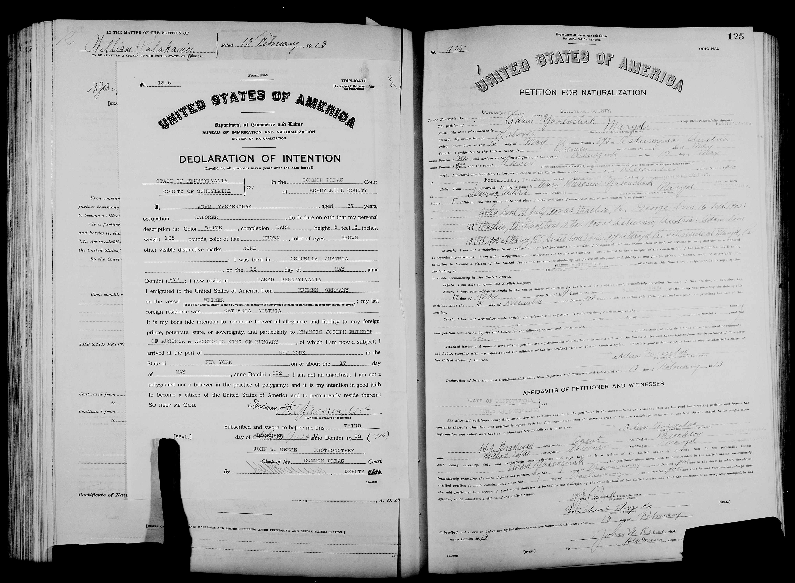
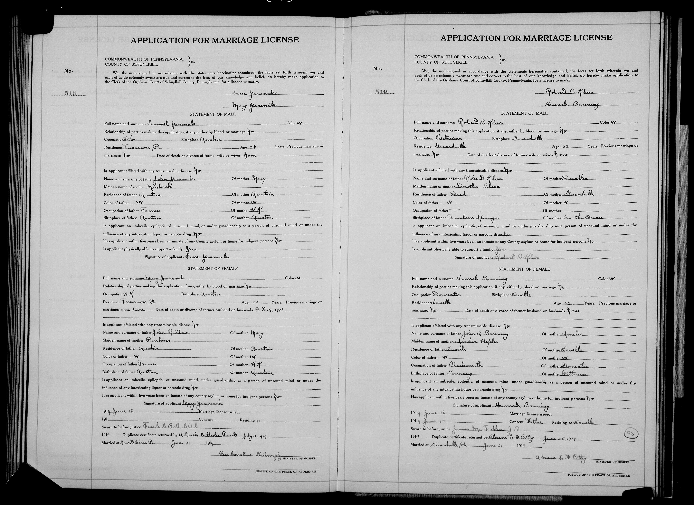
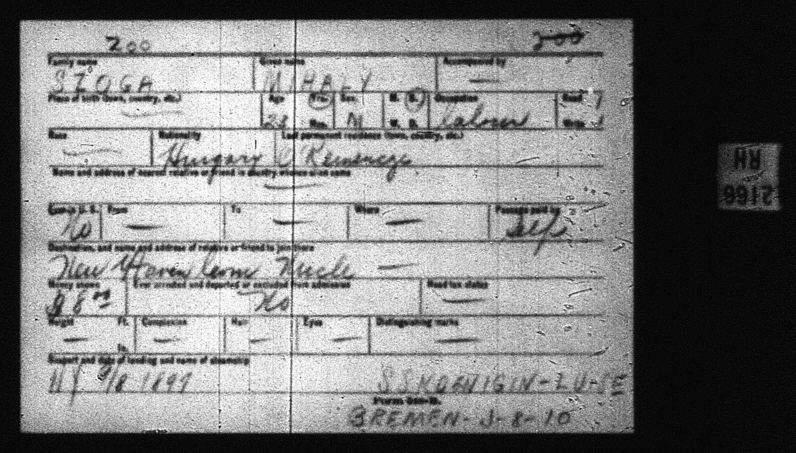

From the Carpathians to America — Documented Origins
This research began with little more than the sound of a family surname remembered from conversation and a belief that the family came from Osturňa, a village in what is now Slovakia. Working from graves, censuses, church and court records, ship manifests, and sworn naturalization papers, every branch of Joseph and Anna Soga’s family has now been traced to a named village in the old Kingdom of Hungary. The mystery name turned out to be Jascencsak — Americanized as Yasenchak — and the Osturňa family story checks out in full, confirmed by two sworn federal documents.
| Person | Born | Home village (today) | Came to America | Died |
|---|---|---|---|---|
| Michael Soga (Mihály Szolga) | 15 Jan 1878 | Ó-Kemencze, Ung county, Hungary (Kamianytsia, Ukraine) | SS Königin Luise, Bremen → New York, Sept 1899 | 1940, NJ |
| Rose Soga (Rosalia Gadus) | 1891 | Füzérradvány, Abaúj-Torna county (still Hungary) | SS President Lincoln, Hamburg → Ellis Island, 8 July 1909 | after 1950 |
| Samuel Yasenchak (Simon Jascencsak) | 26 May 1891 | Osturňa, Szepes county, Hungary (Osturňa, Slovakia) | SS Trave, Bremen → Baltimore, 23 Oct 1906 | 22 Jan 1970, Pottsville PA |
| Mary Yasenchak (Maria Figlar) | 4 June 1895 | Osturňa, Szepes county, Hungary (Osturňa, Slovakia) | New York (Ellis Island), 4 July 1914 | 1970, PA |
| Joseph Soga — grandfather | 13 Jan 1920, Jersey City NJ | — | — | 16 Jul 2000, Schaumburg IL |
| Anna Soga née Yasenchak — grandmother | 20 Jan 1921, Mary D PA | — | — | 26 May 2001, Schaumburg IL |
Joseph Soga and Anna Yasenchak married and later moved from Pennsylvania and New Jersey to the Chicago area. They are buried side by side at St. Michael the Archangel Catholic Cemetery, Palatine, Illinois (Section 8, Block 7, Lot 32, Graves 11–12). Joseph served in the Second World War.
The surname Soga is an American simplification of the Hungarian Szolga (pronounced “SOL-ga”; the word means “servant”). Great-grandfather Michael — Mihály Szolga — was born 15 January 1878 in Ó-Kemencze, Ung county, in the Kingdom of Hungary. The village sits on the Uzh river at the foot of the Carpathians and is today Kamianytsia, in Zakarpattia oblast, Ukraine, just outside Uzhhorod. Ung county was Carpatho-Rusyn, Greek Catholic country. Michael crossed in September 1899, age 23, aboard the SS Königin Luise from Bremen — a single laborer carrying eight dollars, headed for an uncle in New Haven, Connecticut.
Great-grandmother Rose — Rosalia Gadus — was born in 1891 in Füzérradvány, Abaúj-Torna county, a small village in the Zemplén hills best known for the Károlyi mansion. Unlike every other family village, Füzérradvány remains in Hungary today. Her parents were John Gadus and Annie Kababik. Rose sailed from Hamburg on the SS President Lincoln and landed at Ellis Island on 8 July 1909, age 18, recorded as Magyar (ethnic Hungarian). Her manifest names her mother Anna at home and a brother-in-law, Michal Marinczak — meaning a sister had already married into a Marinczak family.
Michael and Rose married on 15 June 1913 in Manhattan (marriage record, certificate no. 18452 — the record that revealed both home villages), then settled at 212 Whiton Street, Jersey City, where Michael laboured for the Central Railroad of New Jersey (WWI draft card, Sept 1918) and Rose cleaned buildings (1930 census, Jersey City). Their children: Michael Jr. (b. 12 Jan 1915), John (b. ~1917), Joseph (b. 13 Jan 1920), and Anna (b. ~1922). Michael Sr. was a naturalized citizen by 1918 and died in 1940; Rose was still living in Jersey City at the 1950 census.
Great-grandfather Samuel — Simon Jascencsak — was born 26 May 1891 in Osturňa, the westernmost Carpatho-Rusyn village in the Carpathians, in the Zamagurie district of Szepes county (today Osturňa, Slovakia). His parents were John Yasenchak, a farmer, and Mary Mudrak, who never left the old country. At fifteen, Samuel crossed from Bremen on the SS Trave, entering at Baltimore on 23 October 1906 under the name “Simon Jaszendzak” (Certificate of Arrival no. 3-61755, cited in his citizenship petition). He followed a classic family chain: kinsman Adam Yasenchak had pioneered the route in 1892, and brother Peter followed in 1903. Samuel spent his working life as a coal-mine laborer at Mary D, the patch village in Schuylkill County, Pennsylvania, and is buried at St. Mary’s Byzantine Catholic Church Cemetery, Tuscarora.
Great-grandmother Mary — Maria Figlar — was born 4 June 1895, also in Osturňa, daughter of John Figlar. She arrived at Ellis Island on the Fourth of July, 1914 — one month before the war closed the Atlantic behind her. She first married another Yasenchak man, who died on 19 December 1918, at the height of the influenza pandemic’s deadliest wave through the coal towns, leaving her a 23-year-old widow with two small daughters, Mary and Katherine. Six months later, on 21 June 1919 at St. Clair, she married Samuel — very likely her late husband’s brother or cousin — before a Greek Catholic priest. Samuel raised the girls as his own.
Samuel and Mary’s children, all born at Mary D: Anna (20 January 1921) — your grandmother — John (21 Sept 1923), Helen (23 Oct 1927), Margaret (29 May 1930), and Eugene (~1933). The family worshipped at St. Mary Byzantine Catholic Church, Brockton, and lies buried in its cemetery at Tuscarora (see, e.g., the 2019 obituary of Margaret Yasenchak of Mary D).
The wider Osturňa colony: Adam Yasenchak (b. 1873, arrived 1892) settled at Mary D with wife Mary and five children — one of whom, remarkably, was born back in Osturňa in 1905 during a return visit. Brother Peter (b. 26 May 1886, arrived 2 June 1903) married Ella, a widow from the Rusyn village of Sapinec, at Beaver Meadow in 1907, and raised her son John Kotansky alongside their children Peter, Helen, and George at Tuscarora. Osturňa neighbours — Glevanyaks, Mudraks, Vaches, Kosturaks, Lessundaks — scattered through the same coal towns: St. Clair, Minersville, New Philadelphia, and as far as Bridgeport, Connecticut, and Boonton, New Jersey.
Three of the four great-grandparent lines (Szolga, Jascencsak, Figlar) were Carpatho-Rusyns — an East Slavic, Greek Catholic mountain people distinct from Slovaks, Poles, Hungarians, and Russians, whose homeland straddles today’s Slovakia, Poland, and Ukraine (The Carpathian Connection: Osturňa). Rose Gadus was recorded as Magyar (ethnic Hungarian). Because Rusyns fit no census category, the same households were labelled “Slovak” in 1920, “Russian” in 1930, and “Slovish” in 1940 — a paper trail of an identity the forms could not hold. When asked where the family is from, the honest short answer is: Carpatho-Rusyn, from villages on both sides of the Carpathians in what is now Slovakia, Hungary, and Ukraine.
Four great-grandparents came from three mountain villages that today lie in three different countries — all within the historic Carpatho-Rusyn homeland straddling the Carpathians. Here is where each came from, and where to read more about these places.
Home of Samuel and Mary Yasenchak, and of the wider colony — Adam, Peter, and their Osturňa neighbours who followed the same path to the Pennsylvania coal towns. A Rusyn village in the Zamagurie district of the former Szepes county in the Kingdom of Hungary, it lies today in far northern Slovakia, near the Polish border below the Tatra mountains.
Birthplace of Michael Soga (Mihály Szolga). Once Ó-Kemencze in Ung county, Hungary, the village sits on the Uzh river at the foot of the Carpathians and is today Kamianytsia, in Zakarpattia oblast, Ukraine, just outside Uzhhorod.
Home of Rose Gadus. A small village in the Zemplén hills of the former Abaúj-Torna county — and the only family village that remains in Hungary today. It is known for the Károlyi mansion and its arboretum.
Nobody in this story changed their name at Ellis Island — and nobody kept a single spelling either. The family spoke Rusyn at home; their births were registered by Hungarian church clerks; German shipping agents wrote their tickets in Bremen and Hamburg; and English-speaking officials in New Jersey and Pennsylvania wrote down whatever they heard. Slavic and Hungarian names begin with a J pronounced like an English Y — so “Jasencsak” sounds like “Yasenchak,” and the American respelling simply kept the sound while losing the look. Each person also carried two given names: the formal baptismal name used on legal papers, and the everyday name used at work and at home.
| Person | In the old country | On the arrival papers | In America |
|---|---|---|---|
| Michael Soga | Mihály Szolga — Hungarian spelling; szolga means “servant” | “Szoga, Mihaly” on the 1899 Königin Luise list — the l was already gone | Mike / Michael Soga. The 1913 Manhattan marriage clerk hedged, recording him as “Michael Szolga or Soga” |
| Rose Soga | Rozália Gadus of Füzérradvány | “Rosalia Gadus,” SS President Lincoln, 1909 | Rose or Rosie Soga; some family trees render her “Mary Rose” |
| Samuel Yasenchak | Simon (Simeon) Jacsencsak — the spelling on the Osturňa village surname list; likely from jasen, the ash tree | “Simon Jaszendzak,” SS Trave into Baltimore, 1906 — a German clerk’s phonetics | Everyday Sam / Samuel Yasenchak (census takers managed Yasenak, Yasenshak, even Yasenclak). His court file uses both registers of his name: the 1929 declaration is signed “Sam,” the 1931 petition “Simon” — one file, No. 13880 |
| Mary Yasenchak | Maria Figlyar — an Osturňa list surname meaning “the joker” | arrival record not yet located (Ellis Island, 4 July 1914) | Mary Figler, then Mary Yasenchak twice over — first widowed by one Yasenchak man, then married to Samuel |
| Anna Soga | — | — | Anna Yasenchak, later Soga — and her Palatine gravestone preserves the near-original spelling “Yascencsak,” a bridge between the village and the suburb |
Scans and images of the original records. Click any image to view it full size.








{kind=link}
{kind=link}
{kind=link}
{kind=link}
{kind=link}
{kind=link}
{kind=link}
{kind=link}